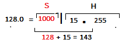
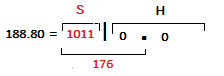
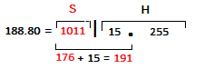

- Exo1: Classes d'adressage
- Exo2: Identifiant réseau
- Exo3: QCM-TCP/IP
...
...
Que signifie le sigle IP ?
Internet Protocol
Completer ce tableau


Interpreter le tableau
• On retire 1bit sur chaque octet
de la partie réseau
⇒ 27, 214, 221
• On retire 127.0.0.0(boucle local)
• On retire 127.0.0.1(LoopBack)
⇒ 27 - 2
Soit l'ordi 192.138.42.121
Soit l'ordi 192.138.42.1
Ces 2 PC peuvent-elles communiquer ?
oui
Justifier votre réponse ...
Masque : regroupement des hôtes dans des sous-réseaux où,
ils peuvent communiquer directement.
| Station A | 192 | 138 | 42 | 121 |
| Station B | 192 | 138 | 42 | 1 |
| Masque | 255 | 255 | 255 | 0 |
Les valeurs face aux 255 sont identiques
⇒ils peuvent donc communiquer
Conlusion : Identifiant S
- Deux machines peuvent communique(directement),
s'elles sont dans le mm réseau - Deux machines sont ds le mm réseau,
s'elles ont en commun les bits R et S
Soit un réseaux de: classe B
Masque: 255.255.252.0
-
Combien de sous-réseaux ?
Nb SR = 2S
R=16, S=6
Nb SR = 26
Nb SR = 64 SR -
@B du reseau 180.35.128.0/20 ?
On garde S: On met H à 1
R=16, S=4, H=12

@B = 180.35.143.255 -
Nb @ du réseau de masq:/27 ?
Nb @ = 2H - 2
R=24, S=3, H=5bit
Nb @ = 25 - 2
Nb @ = 30 machines -
@R du host 150.56.188.80/20 ?
On garde S: On met H à 0
R=16, S=4, H=12

@R = 150.56.176.0 -
Adresse Broadcast ?
On garde S: On met H à 1
R=16, S=4, H=12

@B = 150.56.191.255